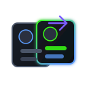

Local-first IDE and browser surfaces. Usage and scans stay on your machine except authenticated Cursor API calls.
Lorapok Labs · VS Code–based AI IDEs
Open VSX · loading…
VS Code · loading…
Release v—
Know your Cursor limits before they know you.
Works across major VS Code–wrapper IDEs — live included quota, billing cycle, on-demand spend, and automatic free fallback to Composer 2.5 (Fast off). Install from Open VSX or the Marketplace.
- Real-time quota & billing cycle
- Personal budget cap & warnings
- Private — data stays on your machine
Universal compatibility
Works with every major VS Code–based AI IDE
Install from Open VSX or the VS Code Marketplace — the same extension runs in Cursor, Windsurf, VSCodium, and every VS Code wrapper IDE listed below.
Need another tool from Lorapok Labs? Visit lorapok.tech for more software & experiments.
Full Lorapok ecosystem
IDE extension, browser guard, and Mission Control
One product family — usage in Cursor, credential protection in the browser, and ops in the admin panel.
Live usage inside your AI IDE
One extension for all VS Code wrapper IDEs. Quota meters, billing cycle, budget caps, Composer 2.5 fallback, and local credential scanning — works in Cursor, Windsurf, VSCodium, Void, Gitpod, Trae, Kiro, and every Open VSX / VS Code Marketplace host.
Firefox & Chrome browser extension
Budget tracker popup, paste guard, and cursor.com token capture — no store lock-in for Chrome.
Admin Mission Control
Mailbox, deployments, marketplace sync, notices, and SEO — operated from cursor-dev.lorapok.tech.
System topology
Architecture — data, deploy, and edge cases
Animated Mermaid diagrams for the full Lorapok stack: local extensions, Mission Control, Production Deployment, and marketplace guards.
Single GitHub Actions workflow: CI, tag prep, marketplace publish, admin + marketing deploy, Discord notifications.
Auth boundaries, dual Open VSX namespace drift, live-tag guards, and runtime limits that keep releases safe.
Canonical source: README architecture · Mission Control
Why developers install it
Everything you need to stay inside your quota
Six core capabilities — each with a product screenshot. Tap any image to view full size.
Live dashboard
Sidebar panel and status bar with Auto/API meters, included quota, and auto-refresh — no extra notification tab.
Budget cap
Set a personal USD limit, track on-demand spend, and get warned before you overshoot.
Free fallback
At 100% included usage, auto-switch to Composer 2.5 (Fast off) — the free slow pool.
Privacy-first
Your auth token never leaves your machine. No telemetry, no shared team dashboard.
Safe DB writes
Read-only while Cursor runs; fallback writes only after quit with WAL backups and integrity checks.

Multi-accountDiscover multiple installs on one machine, switch accounts in the dashboard, and read today's accepted lines from the active profile.
Complete feature set
Every install includes the full monitoring stack — local-first, no account required beyond your IDE login.
-
Multi-account switching
System login plus discovered installs — switch in the dashboard or browser extension without mixing quotas.
-
Today & cycle insights
Local accepted-line stats for today and the billing cycle from the active install's SQLite store.
-
Sidebar dashboard
Activity bar panel with included quota, Auto/API meters, billing reset, on-demand spend, local insights, and cycle trend.
-
Status bar meter
Live usage percentage in the editor status bar — plan, Auto/API, or both.
-
Auto refresh
Polls the Cursor API on a schedule (default 60s) with manual refresh on demand.
-
Personal budget cap
Set a USD limit in settings and track spend against your included quota.
-
Billing cycle countdown
See days until reset so you can pace usage through the month.
-
Limit warnings
Native workbench toasts overlay the open editor at your threshold (default 80%). No extra Notification tab.
-
Composer 2.5 fallback
Optional auto-switch to Composer 2.5 (Fast off) when usage reaches 100%.
-
Team-aware limits
Surfaces individual vs team limit type from your Cursor session context.
-
Security scanner
Local credential detection in files, clipboard, and commits — Manage Processes–style alerts with redacted previews only.
-
Privacy-first
Auth stays on your machine. No extension telemetry unless you opt in.
-
Safe DB writes
Read-only while Cursor runs; fallback writes only after quit with WAL backups.
-
All Open VSX editors & VS Code
Works in Cursor, VSCodium, Windsurf, and Visual Studio Code via Open VSX and the VS Code Marketplace.
-
Local insights
Today’s accepted lines, active models, and recent session titles from local Cursor storage — never chat bodies.
-
Cycle trend
Sparkline of included usage over the billing cycle, stored only on this machine.
-
Fully configurable
Poll interval, status bar source, warnings, budget, and fallback toggles in settings.
Snapshots
Open source & community
Product screenshots live in the ecosystem tabs above — this gallery keeps unique community visuals only.
Get started in minutes
Install —
Commands below update automatically from CI — always pointed at the latest release.
Open VSX (Cursor Marketplace)
Search Extensions for:
lorapok-labs.cursor-curse-monitor-by-lorapokVS Code Marketplace
Search Extensions for:
LorapokLabs.cursor-curse-monitor-by-lorapokGitHub Release VSIX
Download — from the latest release, then run:
cursor --install-extension …Firefox Add-ons (AMO)
Install from Mozilla Add-ons — auto-published on each release.
Install on Firefox →Chrome (direct download)
Not distributed via Chrome Web Store. Download zip, extract, then chrome://extensions → Load unpacked.
Offline / sideload
Install the browser extension without a store
Use these steps when AMO review is pending, Chrome Web Store is unavailable, or you need an air-gapped install from the GitHub Release assets.
Load from GitHub Release (.xpi)
- Download
cursor-curse-monitor.xpifrom the latest GitHub Release (or use the direct link below). - Open
about:debugging#/runtime/this-firefoxin Firefox. - Click Load Temporary Add-on… and select the
.xpifile. - Pin the toolbar icon — usage syncs after you sign in on
cursor.com/dashboard.
Temporary loads reset when Firefox restarts. For a permanent install, use Firefox Add-ons (AMO) once published.
Load unpacked from zip
- Download the Chrome zip from the latest GitHub Release.
- Unzip to a folder (e.g.
~/Extensions/cursor-curse-monitor). - Open
chrome://extensions(or Edge →edge://extensions). - Enable Developer mode, then Load unpacked and select the extracted folder.
Chrome does not distribute this build via the Web Store — sideload only. Re-load after each browser update if Chrome disables unpacked extensions.
Download Chrome zipFor maintainers
Release via Production Deployment
Push to main → auto-patch bump → publishes to Open VSX + VS Code Marketplace → creates GitHub Release. Manual major/minor bumps via GitHub Actions workflow dispatch.
1
Push to main → auto patch bump
→
2
CI builds & publishes to both marketplaces
→
3
GitHub Release + website auto-update
Auto (every push)
git push origin main # patch bump is automatic
Manual minor release
GitHub → Actions → Production Deployment → Run workflow → minor
Manual major release
GitHub → Actions → Production Deployment → Run workflow → majorSite data last synced:
Live marketplace links
Available on Open VSX, VS Code, Firefox & Chrome zip
Verified community download totals are in the hero above — grand total first, then Open VSX, VS Code, and GitHub breakdown.
🟢 Open VSX Registry
For Cursor, VSCodium, Windsurf and all Open VSX-compatible editors
Status: Checking…
Version: —
Downloads: — canonical · — LorapokLabs namespace
View on Open VSX →🔵 VS Code Marketplace
For Visual Studio Code
Status: Checking…
Version: —
Downloads: —
View on VS Code Marketplace →Trust
Your data stays yours
- Only your login — usage is read from your Cursor auth token on your machine.
- No shared dashboard — teammates cannot see your usage through this extension.
- Team context — you see limits for your account session, not other members.
- Anonymous website stats — the marketing site counts visits and install-link clicks only (no personal data).
- No extension telemetry — usage stays on your machine; no third-party trackers in the extension.
Stay updated
Get release notes in your inbox
No spam — just extension updates and important notices from Lorapok Labs.